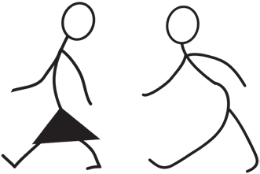

Thus, instruments of labour mean all tools used by human beings in the production process. The tools range from simple to complex, depending on the level of technology a particular society attains. These instruments extend human’s natural organs, such as hands, legs, eyes and the brain. Means of labour help human beings to simplify work. Without them, work becomes difficult.
Instruments of labour are organised around human labour. Human labour is people’s physical and mental energy to produce what they want. Physical labour refers to the energy people use to produce what they want. Mental labour is to do with the knowledge and skills that people utilise during production. When labour and instruments of labour have been combined, they are called productive forces. In production, productive forces act upon resources such as land and forests. These resources are called objects of labour.
An object of labour refers to anything on which human labour is applied in order to produce goods. Such resources are primarily found in natural environments, such as land, rivers and forests. That means human beings need objects of labour to work. Otherwise, work becomes impossible. For example, one may have a good fishing instrument, but one will not fish unless there is a river, an ocean, a lake or a water pond in which fish are found. When human labour, instruments of labour and objects of labour have been combined, they are called means of production.
Means of production comprises the combination of means of labour, human labour and objects of labour. They are necessary for the production of goods and services. They are capital and labour. When left alone, the means of labour have no value in life. Therefore, human labour must act on objects of labour to produce goods and services.
People enter into certain kinds of relations in order to produce goods and services. Relations are either exploitative or non-exploitative, Relation is exploitive when the producers of goods and services are not paid accordingly and the vice versa. A combination of productive forces and relations of production constitutes a mode of production. A mode of production of a particular society is meant to meet people’s needs.

Activity 3.1
Visit one of the economic production or service provision centres to study production relations, then write a report.